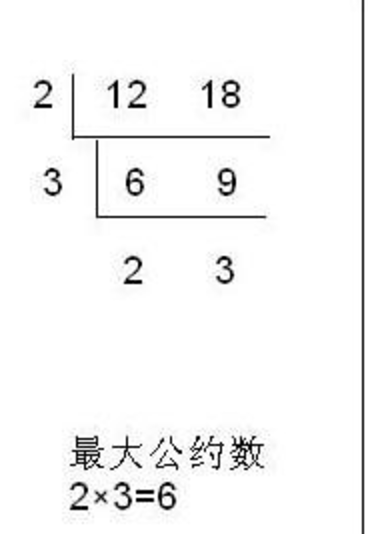

通常我们在面试中都会遇到一道面试题，求两个数的最大公约数。这个我就深入理解，并解析一下这个题目。
首先，我们得理解，什么是最大公约数？以下是网上给出的答案：
最大公因数，也称最大公约数、最大公因子，指两个或多个整数共有约数中最大的一个。a，b的最大公约数记为（a，b），同样的，a，b，c的最大公约数记为（a，b，c），多个整数的最大公约数也有同样的记号。
简单来说，也就是能够同时被两个数整初的数中，最大的那一个。在数学中，我们求最大公约数有多种方法，常见的有质因数分解法、短除法、辗转相除法、更相减损法。
例如：求24和60的最大公约数，先分解质因数，得24=2×2×2×3，60=2×2×3×5，24与60的全部公有的质因数是2、2、3，它们的积是2×2×3=12，所以，（24，60）=12。
var ary_factor = [2, 3, 5, 7];
var x_factor = [];
var greatest_common_divisor = get_factor(24, 60);
alert(greatest_common_divisor);
function get_factor(a, b) {
var a_factor = [];
var b_factor = [];
factor(a);
a_factor = x_factor.sort();
x_factor = [];
factor(b);
b_factor = x_factor.sort();
return common_factor(a_factor, b_factor);
}
function common_factor(a_ary, b_ary) {
var common_ary = [];
var greatest_common_divisor = 1;
for (var j = 0; j < a_ary.length; j++) {
if (b_ary.indexOf(a_ary[j]) != -1) {
common_ary.push(a_ary[j]);
b_ary.splice(b_ary.indexOf(a_ary[j]), 1);
}
};
if (common_ary.length != 0) {
for(var k = 0; k < common_ary.length; k++){
greatest_common_divisor = greatest_common_divisor*common_ary[k];
}
}
return greatest_common_divisor;
}
function factor(x) {
if (x == 1) {
x_factor.push(x);
return x_factor;
};
if (ary_factor.indexOf(x) != -1) {
x_factor.push(x);
return x_factor;
}else{
for(var i = 0; i < ary_factor.length; i++){
if ( x % ary_factor[i] == 0) {
x_factor.push(ary_factor[i]);
x = x/ary_factor[i];
}
}
factor(x);
}
}

var ary_factor = [2, 3, 5, 7];
var common_factor = [];
var greatest_common_divisor = 1;
alert( get_factor(12, 18));
function get_factor(a, b) {
if (a > b) {
var c = a;
a = b;
b = c;
}
if(a == 1 || b == 1) return 1;
if(a == b) return a;
if(b % a == 0) return a;
var is_factor = ary_factor.indexOf(a) != -1 && ary_factor.indexOf(b) != -1;
var is_one_factor = ary_factor.indexOf(a) != -1 && b % a != 0;
if (is_factor || is_one_factor) {
if (common_factor.length !=0 ){
for(var k = 0; k < common_factor.length; k++) {
greatest_common_divisor = greatest_common_divisor * common_factor[k];
};
};
};
for (var i = 0; i < ary_factor.length; i++) {
if(a % ary_factor[i] == 0 && b % ary_factor[i] == 0 && ary_factor.indexOf(a) == -1 && ary_factor.indexOf(b) == -1) {
common_factor.push(ary_factor[i]);
a = a/ary_factor[i];
b = b/ary_factor[i];
i = ary_factor.length+1;
get_factor(a,b);
break;
}
}
return greatest_common_divisor;
}
例如：a=25,b=15，a/b=1……10,b/10=1……5,10/5=2…….0,最后一个为被除数余数的除数就是5,5就是所求最大公约数。
var greatest_common_divisor = 1;
get_greatest_common_divisor(10, 48);
alert(greatest_common_divisor);
function get_greatest_common_divisor(a, b) {
var remainder = 0;
if(a > b) {
var c = a;
a = b;
b = c;
}
if(b % a == 0) {
greatest_common_divisor = a;
return;
} else {
remainder = b % a;
get_greatest_common_divisor(remainder, a);
};
}
第一步：任意给定两个正整数；判断它们是否都是偶数。若是，则用2约简；若不是则执行第二步。
第二步：以较大的数减较小的数，接着把所得的差与较小的数比较，并以大数减小数。继续这个操作，直到所得的减数和差相等为止。
则第一步中约掉的若干个2与第二步中等数的乘积就是所求的最大公约数。
var greatest_common_divisor = 1;
get_greatest_common_divisor(48, 30);
alert(greatest_common_divisor);
function get_greatest_common_divisor(a, b) {
if(a > b) {
var c = a;
a = b;
b = c;
}
if(a % 2 == 0 && b % 2 == 0) {
a = a/2;
b = b/2;
greatest_common_divisor = greatest_common_divisor*2;
get_greatest_common_divisor(a, b);
} else {
b = b-a;
if((b-a) == 0){
greatest_common_divisor = greatest_common_divisor*a;
} else {
get_greatest_common_divisor(a, b);
}
}
}
历时n久，今天终于有时间把这篇文章补充完整。以上就是四种方式对最大公约数求解的方法以及程序，大家应该对哪种方式最优也有了自己的看法。当然我写的程序并不一定是最优的，有不完美的地方还请指出。